作業平面を作る
作業平面を作る
具体例: XY面から高さ5mmの作業面を作る
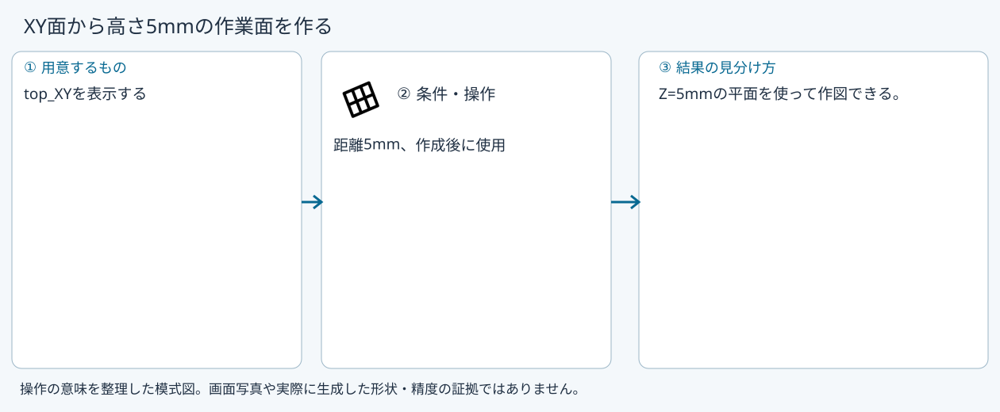
準備
top_XYを表示する
操作手順
- 作業平面を選ぶ
- 平面から離すを選ぶ
- 基準top_XY、距離5mmを設定して確定する
設定: 距離5mm、作成後に使用
結果を確認
Z=5mmの平面を使って作図できる。
取消・やり直し
ダイアログの取消、またはペインの取消を使います。即時操作には未確定段階がありません。 確定済みの文書変更はCtrl+Z、やり直しはCtrl+Yです。保存・書出し済みのファイルはUndoの対象ではありません。
進めない場合
作業平面を作ります。作り方は12通りあります。
対象欄と3Dの強調を照合し、必要な線・面・部品を各役割へ指定します。処理中は計算表示を確認し、取消が可能な処理は取消を使います。
標準面
準備: 選択なし
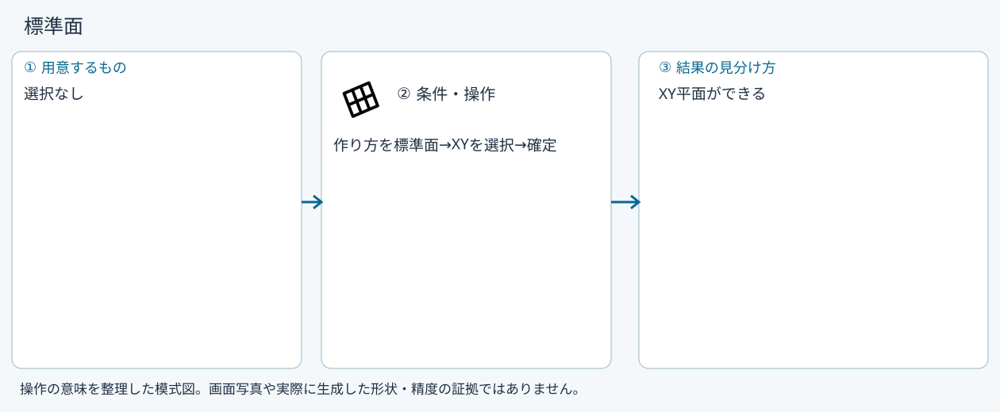
- 作り方を標準面
- XYを選択
- 確定
確認: XY平面ができる
位置と向きを数値指定
準備: 選択なし
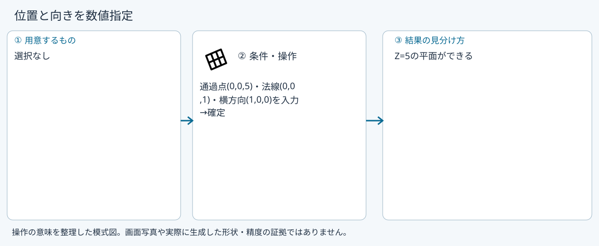
- 通過点(0,0,5)・法線(0,0,1)・横方向(1,0,0)を入力
- 確定
確認: Z=5の平面ができる
3点
準備: 点(0,0,0),(10,0,0),(0,10,0)
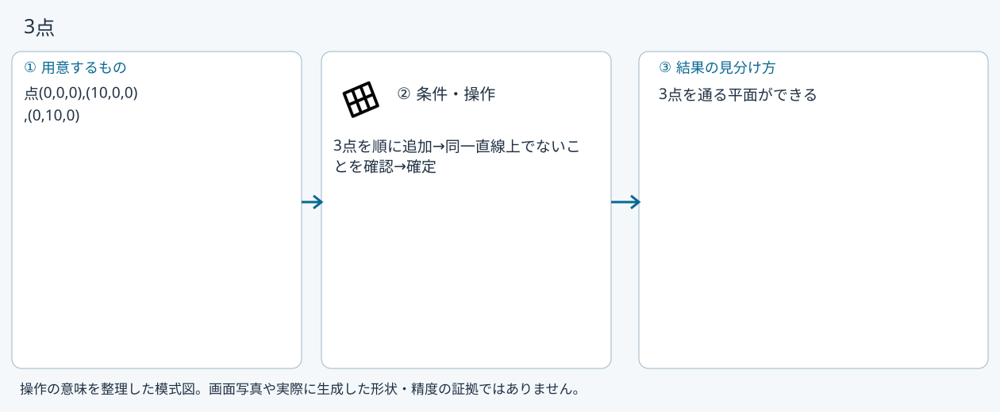
- 3点を順に追加
- 同一直線上でないことを確認
- 確定
確認: 3点を通る平面ができる
平面から離す
準備: top_XY
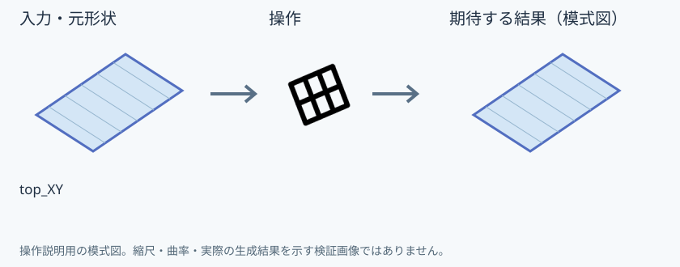
- 基準平面を追加
- 距離5mm
- 確定
確認: 平行なZ=5の平面ができる
辺まわりに角度
準備: XY面とX軸方向の直線
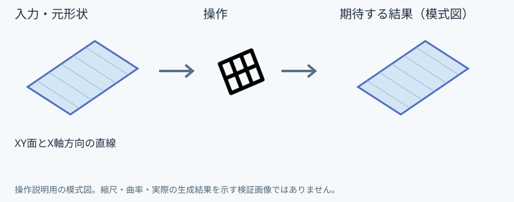
- 平面と辺を追加
- 角度30度
- 確定
確認: 辺を軸に傾けた平面ができる
点を通り平行
準備: top_XYと点(0,0,5)
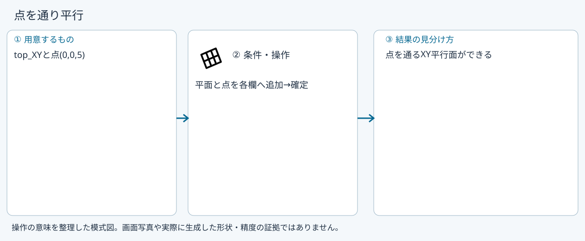
- 平面と点を各欄へ追加
- 確定
確認: 点を通るXY平行面ができる
2面の中間
準備: Z=0とZ=10の平面
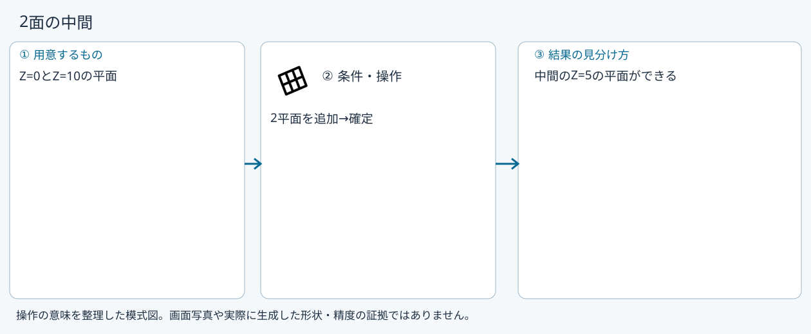
- 2平面を追加
- 確定
確認: 中間のZ=5の平面ができる
2辺を含む
準備: 原点で交差するX方向・Y方向の2直線
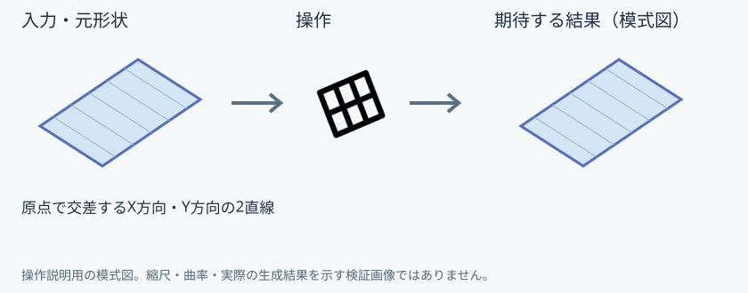
- 2辺を追加
- 確定
確認: 2辺を含む平面ができる
点で曲線に直角
準備: Z方向の線
- 線を追加
- 線上位置0.5
- 確定
確認: 線の中央で直角な平面ができる
点を通り接する
準備: 現UIは支持面入力に未対応
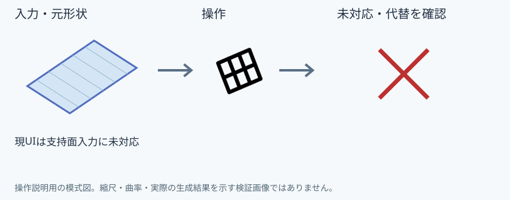
- この項目は選択不可
- フェイスで作図、または位置と向きを数値指定を使う
確認: 未対応。作成成功例ではありません
円筒の中心
準備: 現UIは支持面入力に未対応
- この項目は選択不可
- フェイスで作図、または位置と向きを数値指定を使う
確認: 未対応。作成成功例ではありません
辺を通り接する
準備: 現UIは支持面入力に未対応
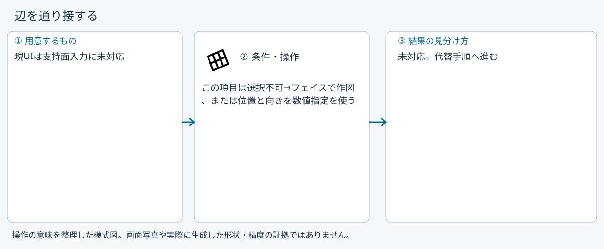
- この項目は選択不可
- フェイスで作図、または位置と向きを数値指定を使う
確認: 未対応。作成成功例ではありません
Windows版の操作画面